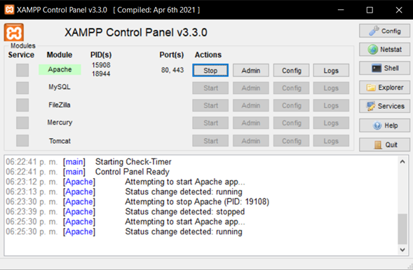
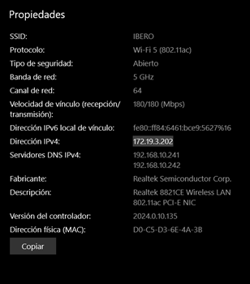
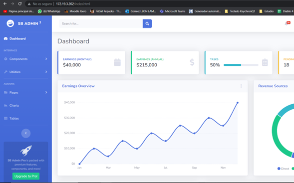

Practicas de Laboratorio: Practica 6
"1. Objetivo General: Conocer, investigar e identificar los pasos para configurar una red local y el acceso a recursos de un equipo en red."
Configuracion de Apache
>Primero, es necesario asegurarse de que Apache esté instalado y configurado correctamente en el sistema. Esto implica establecer la configuración del puerto en el archivo de configuración de Apache para que escuche en el puerto 80, que es el puerto predeterminado para las conexiones HTTP.
Dirección IP
>Cada dispositivo en una red local tiene una dirección IP única asignada. En este caso, se está utilizando la dirección IP 172.19.3.202 como ejemplo. Esta dirección IP se utiliza para identificar y comunicarse con el dispositivo que aloja el servidor Apache y el panel de control de XAMPP.
Acceso al panel de control XAMPP
>Una vez que Apache esté en funcionamiento y el panel de control de XAMPP esté activo, se puede acceder a través de un navegador web escribiendo la dirección IP en la barra de direcciones. En este caso, sería "http://172.19.3.202". Al presionar Enter, el navegador enviará una solicitud al servidor Apache en la dirección IP especificada y al puerto 80.
Insertar codigo HTML
 >
>
Por defecto, los archivos del servidor web se almacenan en el directorio "htdocs" en la carpeta de instalación de XAMPP. Por ejemplo, en Windows, puedes encontrarlo en "C:\xampp\htdocs".